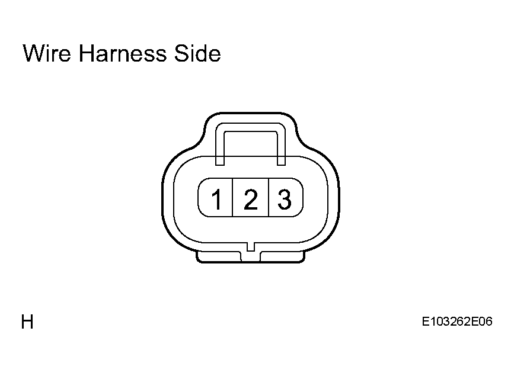

On-Vehicle Inspection
- CHECK PRESSURE SENSOR
- Check the wire harness.
- Disconnect the connector from the pressure sensor.
- Measure the resistance of the wire harness side connector.

Courtesy of © TOYOTA, LICENSE AGREEMENT TMS1002Standard resistance
TESTER CONNECTION AND SPECIFIED CONDITION CHARTTester Connection Specified Condition 1 - Body ground Below 1 Ω - Measure the voltage of the wire harness side connector.
Standard voltage
TESTER CONNECTION AND SPECIFIED CONDITION CHARTTester Connection Specified Condition 1 - 3 10 to 14 V
- Check the pressure sensor.
- Set the manifold gauge.
- Connect the connector to the pressure sensor.
- Warm up the engine.
- Turn the A/C switch ON.
- Measure the voltage of the sensor connector.
Standard voltage
TESTER CONNECTION AND SPECIFIED CONDITION CHARTTester Connection Condition Specified Condition A17-12 (PRE) - A17-10 (SG-1) 0.176 to 3.025 MPa (1.8 to 32 kgf/cm2 , 25 to 455 psi) 0.76 to 4.74 V If the result is not as specified, replace the sensor.
- Check the wire harness.